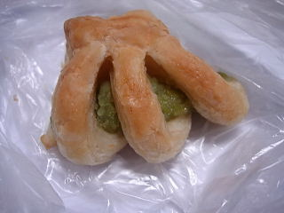
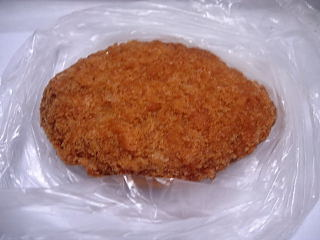

コーヒーハウスのずんだデニッシュ
2008/08/24
とっても小さな一口パンです。

デニッシュのところの層が沢山あって、美味しかったです。
小さいので餡の味はよく分からなかったですが、甘くて、いいお菓子だなと思いました。
島根県浜田市下府町181-2
2008/08/24
とっても小さな一口パンです。

デニッシュのところの層が沢山あって、美味しかったです。
小さいので餡の味はよく分からなかったですが、甘くて、いいお菓子だなと思いました。
2008/08/24
最近パン屋さんでフライドチキンを売っているのをよく見るんですが、ミンチカツも売ってるところがあるんですね。

たまねぎが程よく入ってて、柔らかくてジューシーなミンチカツでした。
私は揚げ物が好きなので、色んな揚げ物が売っていると嬉しいです。季節感やオリジナルな商品があるともっと嬉しいですけど。